P27
Interior Point Methods and Impact Zone Optimization
✅ 发现碰撞的pairs后如何处理。
P28
Two Continuous Collision Response Approaches
✅ 这是两个大的套路，不是具体的方法。
Given the calculated next state \(\mathbf{x} ^{[1]}\), we want to update it into \(\bar{\mathbf{x} } ^{[1]}\), such that the path from \(\mathbf{x} ^{[0]}\) to \(\bar{\mathbf{x} } ^{[1]}\) is intersection-free.
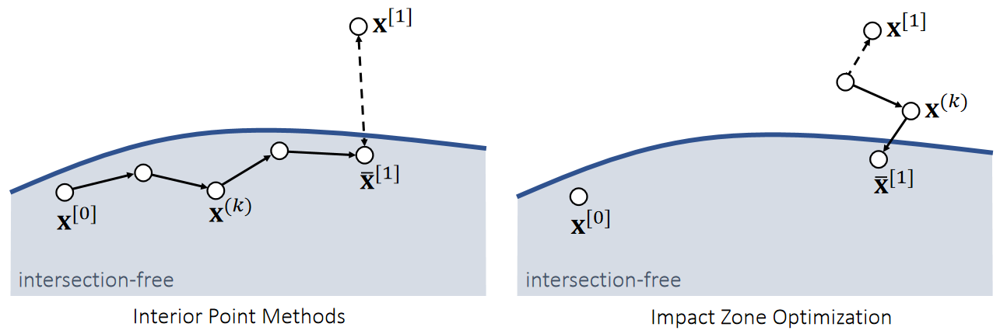
内点法：
| 内点法 | Impact Zone 法 | ||
|---|---|---|---|
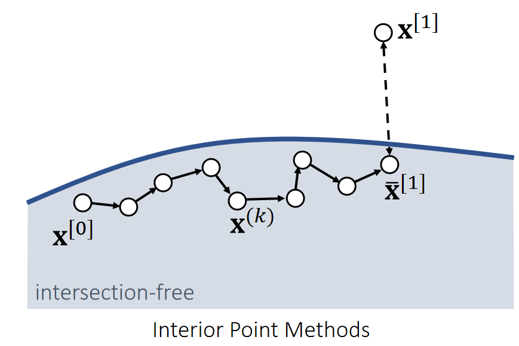 | 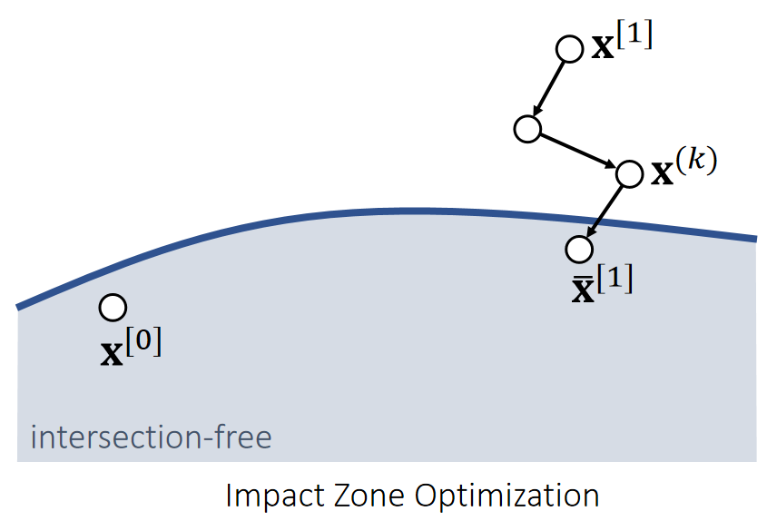 | ✅ 蓝色区域为安全区域 | |
| ✅ 从\(\mathbf{x}^{[0]}\)出来，朝\(\mathbf{x}^{[1]}\)走，并永远保证只在安全区域走，直到不能走为止。 | ✅ 从\(\mathbf{x}^{[1]}\)出发，反复优化结果（投影），直到回到安全区域为止。 | ||
| 优点 | Always succeed | Fast. 1. Close to solution. 2. Only vertices in collision (impact zones). 3. Can take large step sizes. | ✅ Impact Zone：\(\mathbf{x}^{[1]}\)通常离安全区域不太远，且优化时只针对 Impact Zone 优化，因此快。 |
| 局限性 | Slow. 1. Far from solution. 2. All of the vertices. 3. Cautiously by small step sizes. | May not succeed. | ✅ 内点：为保证每一步安全，步长不能太大，因此慢、哪怕\(\mathbf{\bar{x}}^{[1]}\)最终没有到最佳位置，但能保证一定在安全区域，因此一定成功。\(\mathbf{x}^{[0]}\)和\(\mathbf{x}^{[1]}\)可能比较远，也导致慢。 ✅ 内点法慢的原因2没有解释。 |
P30
Log-Barrier Interior Point Methods
算法过程
For simplicity, let’s consider the Log-barrier repulsion between two vertices.
$$E(\mathbf{x} )=−\rho \text{ log} ||\mathbf{x} _{ij}||$$
$$ \mathbf{f} _i(\mathbf{x} )=−∇_iE=ρ\frac{\mathbf{x} _ {ij}}{||\mathbf{x} _ {ij}||^2} \\ \mathbf{f} _j(\mathbf{x} )=−∇_jE=−ρ\frac{\mathbf{x} _ {ij}}{||\mathbf{x} _{ij}||^2} $$
✅ 用 Log 定义能量、前面某一节课讲过。距离 → 能量 → 斥力
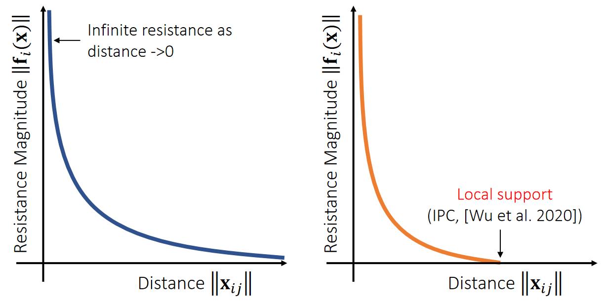
✅ 不需要互斥力一直存在，因此做了一个截断（IPC）
P31
算法实现
We can then formulate the problem as:
$$ \bar{\mathbf{x} }^ {[1]}\longleftarrow \mathrm{argmin} _\mathbf{x} (\frac{1}{2} ||\mathbf{x} −\mathbf{x} ^{[1]}||^2−ρ\sum \mathrm{log} ||\mathbf{x} _{ij}||) $$
✅ 优化目标：点的位置与目标位置（穿模）尽量接近，然后优化。
Gradient Descent:
\(\mathbf{x} ^{(0)}\longleftarrow \mathbf{x} ^{[0]}\)
For \(k=0…K\)
$$\mathbf{x} ^{(k+1)}\longleftarrow \mathbf{x} ^{(k)}+α(\mathbf{x} ^{[1]}−\mathbf{x} ^{(k)}+ρ\sum \frac{\mathbf{x} _{ij}}{||\mathbf{x} _{ij}||^2})$$ \(\bar{\mathbf{x} }^ {[1]}\longleftarrow \mathbf{x} ^{(k+1)}\)
The step size \({\color{Red} α}\) must be adjusted to ensure that no collision happens on the way. To find \({\color{Red} α}\), we need collision tests.
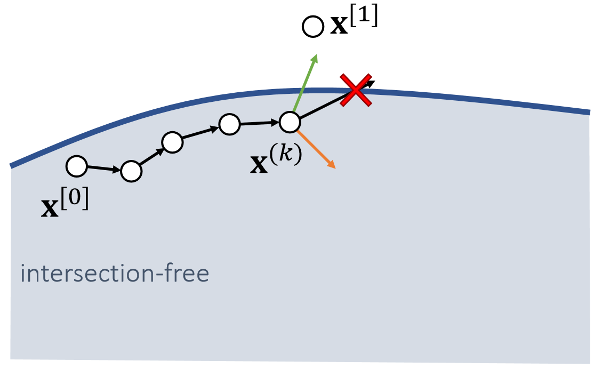
✅ 绿色是来自\(\mathbf{x}^{[1]}\)的引力，黄色是来自边界的斥力、关键是步长\(\alpha \)， 每走一小步都需要反复的碰撞检测。
P32
Impact Zone Optimization
The goal of impact zone optimization is to optimize \(\mathbf{x}^{[1]}\) until it becomes intersection-free. (This potentially suffers from the tunneling issue, but it’s uncommon.)
$$ \bar{\mathbf{x} }^{[1]}\longleftarrow \mathrm{argmin} _\mathbf{x} \frac{1}{2} ||\bar{\mathbf{x} }-\mathbf{x}^{[1]}||^2 $$
$$ \text{such that} \begin{cases} C(\mathbf{x} )=−(\mathbf{x} _3−b_0\mathbf{x} _0−b_1\mathbf{x} _1−b_2\mathbf{x} _1)\cdot \mathbf{N} ≤0 & \text{ For each detected vertex-triangle pair } \\ C(\mathbf{x} )=−(b_2\mathbf{x} _2+b_3\mathbf{x} _3−b_0\mathbf{x} _0−b_1\mathbf{x} _1)\cdot \mathbf{N}≤0 & \text{ For each detected edge-edge pair } \end{cases} $$
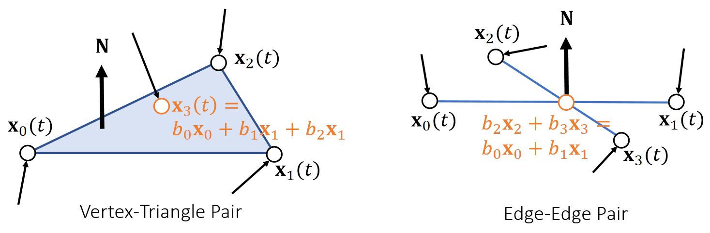
✅ 利用 constrain（不是能量）转化成优化问题，具体没讲。
P33
Geometric Impulse
The goal of impact zone optimization is to optimize \(\mathbf{x}^{[1]}\) until it becomes intersection-free. (This potentially suffers from the tunneling issue, but it’s uncommon.)
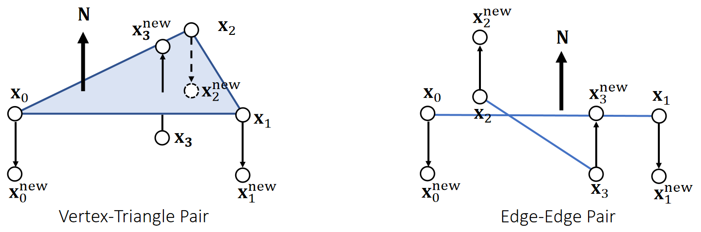
Every pair gives new positions to the involved vertices. We can combine them together in a Jacobi, or Gauss-Seidel fashion, just like position-based dynamics.
P34
After-Class Reading (Cont.)
Bridson et al. 2002. Robust Treatment of Collisions, Contact and Friction for Cloth Animation. TOG (SIGGRAPH).
Relative simple explicit integration of cloth dynamics
P35
Augmented Lagrangian
$$ \bar{\mathbf{x} }^{[1]}\longleftarrow \text{argmin} _\mathbf{x} \frac{1}{2} ||{\mathbf{x} }-\mathbf{x}^{[1]}||^2 $$
$$ \text{such that} \begin{cases} C(\mathbf{x} )=−(\mathbf{x} _3−b_0\mathbf{x} _0−b_1\mathbf{x} _1−b_2\mathbf{x} _1)\cdot \mathbf{N} ≤0 & \text{ For each detected vertex-triangle pair } \\ C(\mathbf{x} )=−(b_2\mathbf{x} _2+b_3\mathbf{x} _3−b_0\mathbf{x} _0−b_1\mathbf{x} _1)\cdot \mathbf{N}≤0 & \text{ For each detected edge-edge pair } \end{cases} $$
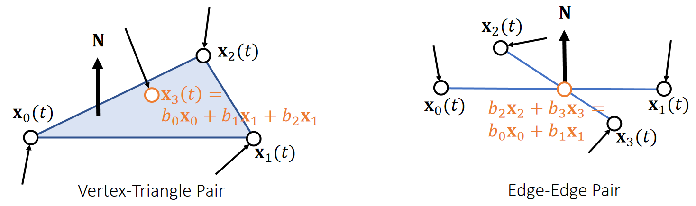
P36
Augmented Lagrangian
We can then convert it into an unconstrained form:
$$\bar{\mathbf{x} } {[1]}\longleftarrow \text{argmin}_{x,λ}(\frac{1}{2} ||\mathbf{x} −\mathbf{x} ^{[1]}||^2+\frac{ρ}{2} ||\text{max}(\tilde{C} (\mathbf{x} ))||^2−\frac{1}{2ρ}||\mathbf{λ} ||^2) $$
$$ \tilde{C} (\mathbf{x})= \text{max}(\mathbf{C} (\mathbf{x} )+\mathbf{λ} /ρ) $$
Augmented Lagrangian:
\(\mathbf{x} ^{(0)} \longleftarrow \mathbf{x} ^{[0]}\)
\(\mathbf{λ \longleftarrow 0} \)
For \(k=0…K\)
$$\mathbf{x} ^{(k+1)} \longleftarrow \mathbf{x} ^{(k)}−α∇(\frac{1}{2} ||\mathbf{x} −\mathbf{x} ^{[1]}||^2+\frac{ρ}{2} ||\text{max}(\tilde{C} (\mathbf{x} ))||^2−\frac{1}{2ρ}||\mathbf{λ} ||^2)$$
\(λ\longleftarrow ρ\tilde{C} (\mathbf{x} )\)
\(\bar{\mathbf{x} } ^{[1]}\longleftarrow \mathbf{x} ^{(k+1)}\)
Tang et al. 2018. I-Cloth: Incremental Collision Handling for GPU-Based Interactive Cloth Simulation. TOG. (SIGGRAPH Asia)
P37
About Impact Zone Optimization
-
Fast per iteration
- Only have to deal with vertices in collision.
-
Convergence sensitive to \(||\mathbf{x} ^{[0]}−\mathbf{x} ^{[1]}||^2\), or the time step \(∆t\)
- Can take many iterations to, or never achieve intersection-free.
- Easy solution is to reduce \(∆t\), but that increases total costs.
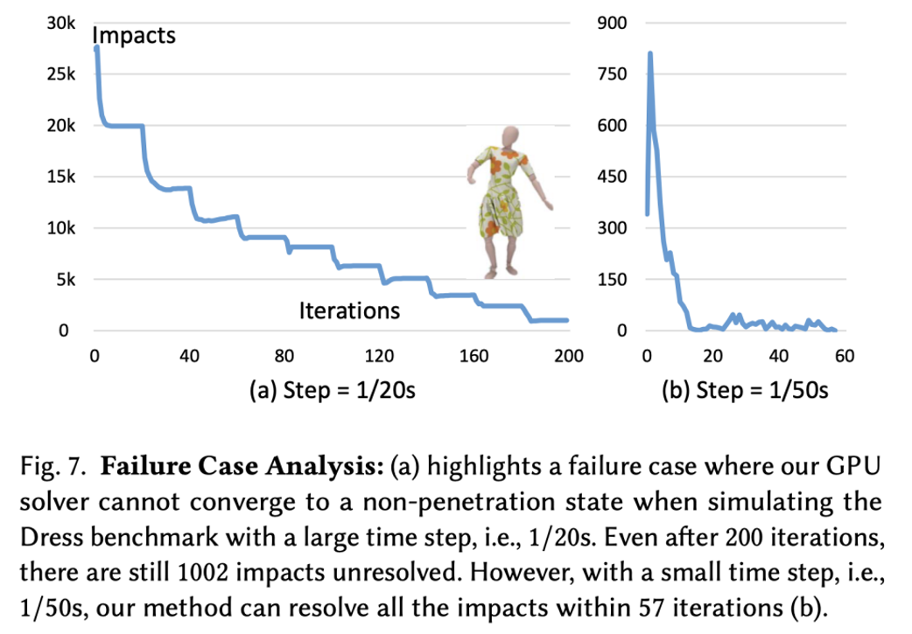
P38
Rigid Impact Zones
The rigid impact zone method simply freezes vertices in collision from moving in their pre-collision state. It’s simple and safe, but has noticeable artifacts.
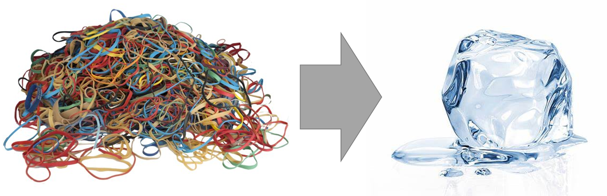
✅ 检测到碰撞，则把这个区域退回到上一帧。
P39
A Practical System
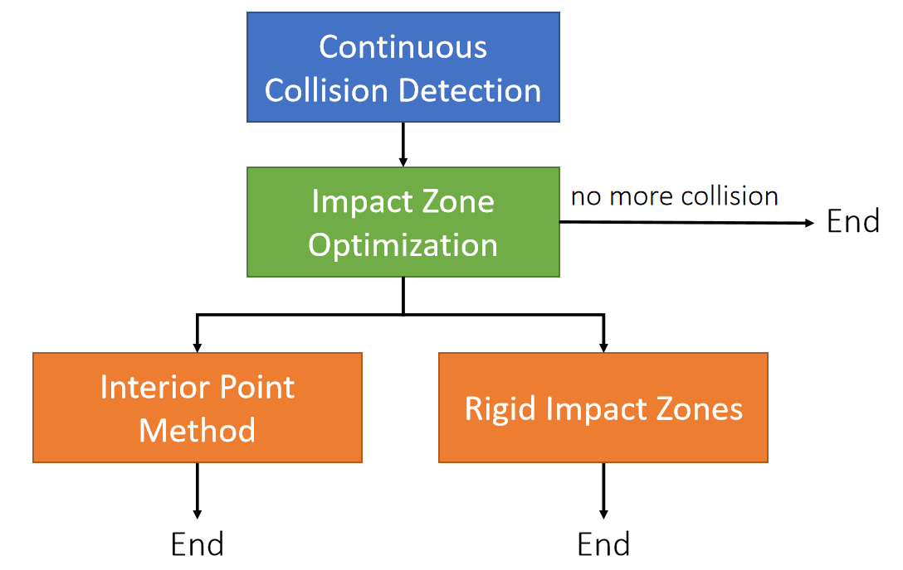
✅ 有碰撞，先做 Impact Zone. 因为这个快、不能解决再用后面方法、计算量不允许则选择 Rigid Impact.
本文出自CaterpillarStudyGroup，转载请注明出处。
https://caterpillarstudygroup.github.io/GAMES103_mdbook/